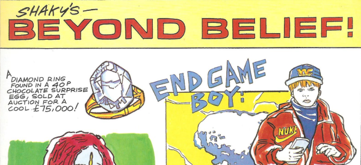

Aburdist pop art & commentary. For example, there's a monk carrying a cactus, and it says "Thai monks must carry a cactus plant at all times - as a sign of humidity!"
Art by Shaky Kane
| Title | Parts | Pages | w indicates a wraparound coverCovers | Year(s) | Issues | Writer | Artist | Colourist | Letterer |
|---|---|---|---|---|---|---|---|---|---|
| Shaky's Beyond Belief | 6 | 6 | 0 | 1994 | 873-874, 876, 878-880 | Shaky Kane | Shaky Kane | <-- | Shaky Kane |
Inserted in Output page.Shaky's Beyond Belief | 6 | 3 | 0 | 1996 | 977-982 | Shaky Kane | Shaky Kane | <-- | Shaky Kane |
| Shaky's Beyond Belief | 2 | 2 | 0 | 1996-1997 | 1005, 1027 | Shaky Kane | Shaky Kane | <-- | Shaky Kane |
| year | episodes | pages |
| 1985 | 0 | 0 |
| 1986 | 0 | 0 |
| 1987 | 0 | 0 |
| 1988 | 0 | 0 |
| 1989 | 0 | 0 |
| 1990 | 0 | 0 |
| 1991 | 0 | 0 |
| 1992 | 0 | 0 |
| 1993 | 0 | 0 |
| 1994 | 6 | 6 |
| 1995 | 0 | 0 |
| 1996 | 7 | 4 |
| 1997 | 1 | 1 |
| 1998 | 0 | 0 |
| 1999 | 0 | 0 |
| 2000 | 0 | 0 |
| 2001 | 0 | 0 |
| 2002 | 0 | 0 |
| 2003 | 0 | 0 |
| 2004 | 0 | 0 |
| 2005 | 0 | 0 |
| 2006 | 0 | 0 |